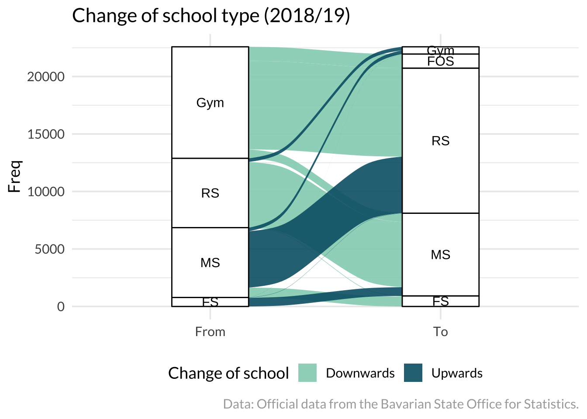
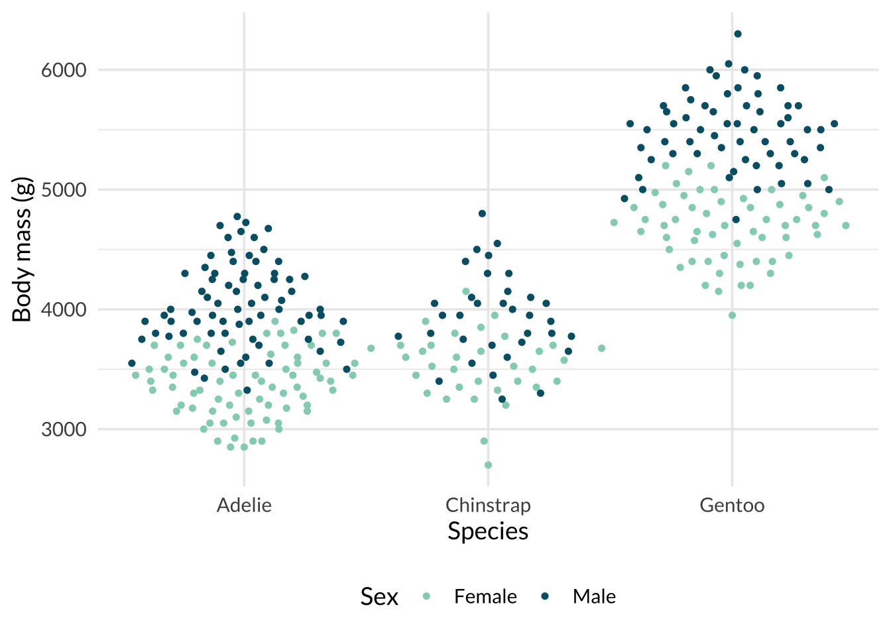
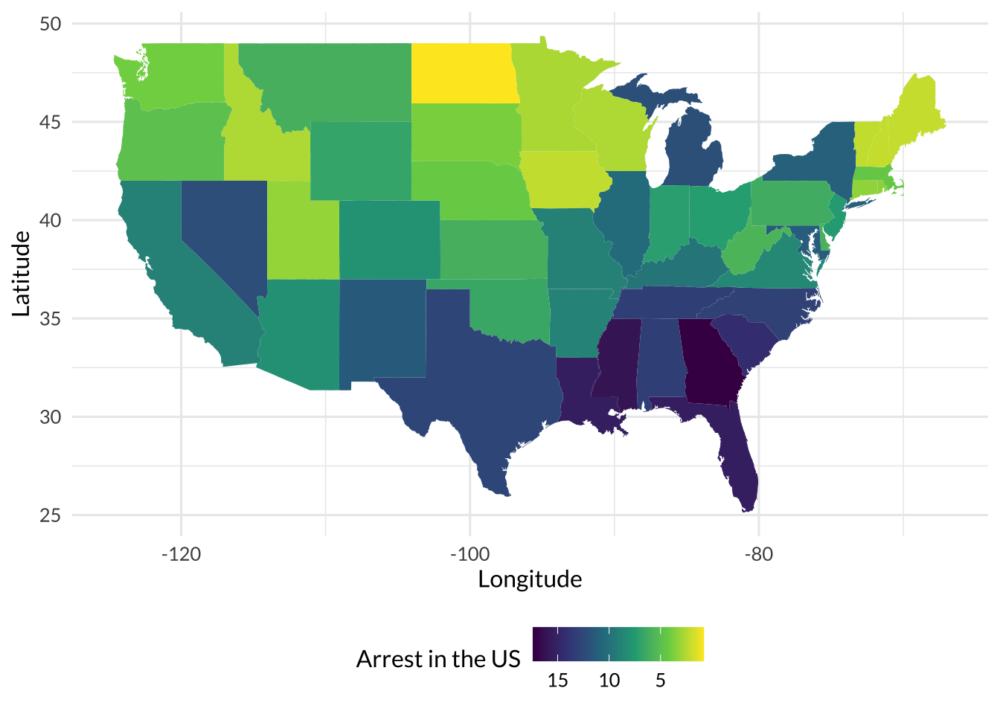
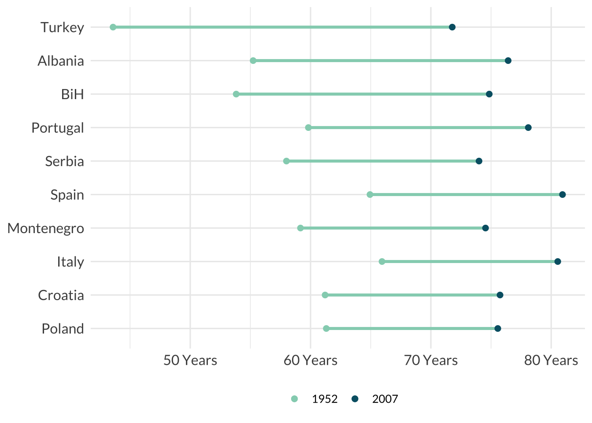
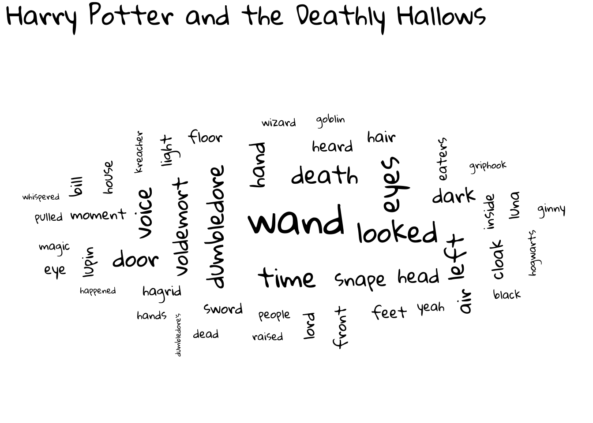

Ten additional geoms for ggplot2
The ggplot2 package provides many possibilities to visualize data and let you create visualizations from the ground. Moreover, there are plenty of ggplot2 extensions packages that increase your possibilities and in this blog I concentrate on ten packages providing an additional geom. (1) I describe each visualization briefly. (2) I show an example graph. (3) I provide a minimal code snippet to recreate such a graph with implemented data. By relying on implemented data, there is no hassle of running many data preparation steps if you want to explore one of the packages on your own. Now, relax and get inspired by the many ggplot2 authors and extensions.
01 Alluvial
Alluvial charts are awesome to highlight the flow of a process or how proportions develop over time. As the example plot shows, I used the titanic data which indicates who survived the sinking of the Titanic. The alluvial chart depicts how the three socio-demographic variables (sex, age, class) are related in terms of survival. As the plot shows, most persons who did not survive were male, adults, and crew members.
Create an alluvial plot with the ggalluvial package (see Brunson and Read 2020). The geom_stratum() returns boxes that display the frequency of each group level and the geom_alluvium draws the flow from one level to another. The package vignette also outlines how to create an alluvial chart.
#Minimal code example #####
library(ggplot2)
library(ggalluvial)
#A wide data format
titanic_wide_format <- data.frame(Titanic)
ggplot(data = titanic_wide_format,
aes(axis1 = Class, axis2 = Sex, axis3 = Age, y = Freq)) +
geom_alluvium(aes(fill = Survived)) +
geom_stratum()02 Beeswarm plots
A beeswarm plot is a categorical scatter plot that shows the distribution of a numerical variable, shaped for each category (Clarke and Sherrill-Mix 2017). Just like a scatter plot, a beeswarm plot displays single observations with points. Unfortunately, sometimes there are too many observations to display, and in consequence, points are no longer visible. Beeswarm plots help to reduce such over-plotting by adding vertical noise.
For example, the following plot depicts the age of Titanic passengers, compared for those who did (not) survive and single points are colored by passenger’s sex. What do you say, how old were people who did (not) survive? Did more men or women perish?

The ggbeeswarm package includes geom_quasirandom() which adds quasi-random noise to each observation as a default method, even though it has several methods to reduce over-plotting (e.g., pseudorandom, smiley).
#Minimal code example #####
library(ggbeeswarm)
ggplot(penguins, aes(species, body_mass_g,
color = sex)) +
geom_quasirandom()03 Choropleth maps
Create a choropleth map with ggplot2. The latter displays a geographical area (or region) and, for example, fills the shape of the area. The next plot displays the number of arrests in the US. It takes time and effort to create a choropleth map, but the result is worth the trouble.

In addition, the ggmap package helps to create maps (Kahle, Wickham, and Jackson 2019; Kahle and Wickham 2013), because we need to draw the shape of each area (e.g., country shape) first. The shape must be displayed by its longitude and latitude before we can fill the area or display numbers that describe the area. The minimal code does not need any additional package and shows an example from the ggplot2 cheat sheet. If the corresponding geographical areas can be matched with the data, geom_map() draws the map and fills each area with the observed value.
#Minimal code example #####
#Source: This example comes from the ggplot2 cheat sheet!
map <- map_data("state")
data <- data.frame(murder = USArrests$Murder,
state = tolower(rownames(USArrests)))
ggplot(data, aes(fill = murder))+
geom_map(aes(map_id = state), map = map)+
expand_limits(x = map$long, y = map$lat)04 Dumbbell and lollipop charts
The ggplot2 package lets you build a graph from scratch, but creating a visualization is hard work. The ggcharts package is for the lazy cats and gives access to a lot of common charts (Neitmann 2020). The package has implemented those graphs with its own functions, and we don’t have to create each step on our own. Furthermore, the package returns ggplot2 objects, which implies that you can apply your ggplot2 knowledge as well.
For example, create a dumbbell or a lollipop chart. I used the former to examine how life expectancy increased between 1952 and 2007 based on the gapminder data. The example shows the top 10 European countries with the highest increase in life expectancy.

#Minimal code example #####
library(ggcharts)
data("popeurope")
dumbbell_chart(popeurope,
x = country,
y1 = pop1952, y2 = pop2007,
top_n = 10)05 Hexbin map
Build a hexbin map with ggplot2. It displays hexagons as shapes. Actually, this graph is as an Easter egg since we do not need any additional package to make this plot. There are a lot of great extensions for ggplot2, but you can create many graphs with ggplot2 alone and we did not explore all geoms. For example, the geom_polygon() function creates the hexbin map and here it shows US unemployment rates.
The graph is inspired by r-graph-gallery.com website. It shows a great variety of (ggplot2) visualization, provides a lot of resources to create plots, and has articles that discuss the limitations of graphs as well. Have you ever seen a radar, a stream, or a sunburst chart? Visit the website and learn how to make them.
#Minimal code example #####
#There are many graphs (and code) to explore on:
#www.r-graph-gallery.com06 Mosaic plots
Mosaic (or spine) plots are very powerful when visualizing descriptive results, and we created one with base R in Chapter 3. However, mosaic plots are also implemented in ggplot2. The ggmosaic() package provides the corresponding geom (Jeppson, Hofmann, and Cook 2021). The illustration uses the titanic data and depicts the effect of passenger’s sex on survival. Obviously, more women than men survived the accident.
As the minimal code illustrates, the geom_mosaic comes with a product() function to estimate frequencies for each category and fills each box accordingly.
#Minimal code example #####
library(ggmosaic)
ggplot(data = titanic) +
geom_mosaic(aes(x = product(Sex),
fill = Survived))07 Ridge plots
Compare the distribution of a numeric variable with a ridge plot (Wilke 2021). In the example, I used the gapminder data to inspect how life expectancy differs between continents in 2007. As the plots shows, Europe has the highest, while Africa had the lowest life expectancy. The distribution is much wider in Africa compared to other continents.
The ggridges package comes with data and a lot of illustrative examples provided by Claus Wilke, the author of the package. As the code from the vignette illustrates, explore how the weather (temperature) develops within a year.
#Minimal code example #####
library(ggridges)
#Minimal code by Claus Wilke:
ggplot(lincoln_weather, aes(x = `Mean Temperature [F]`, y = Month,
fill = stat(x))) +
geom_density_ridges_gradient(scale = 3,
rel_min_height = 0.01) +
scale_fill_viridis_c(name = "Temp. [F]",
option = "C") 08 Treemaps
You can visualize hierarchical data with a treemap, because the area of the rectangle is chosen proportionally to the size of each cluster. Before he was banned, Donald Trump was a huge fan of Twitter and Axios collected and categorized his tweets. Some tweets were about the media, democrats, and the grand old party (GOP), with further subgroups within each category. I used this data and the treemapify package to make a treemap (Wilkins 2021). Mr. Trump tweeted a lot about “the media” and the “Democrats” in 2019.
The data of the last plot is not available, but you can use the gapminder data to explore how treemapify works.
#Minimal code example #####
library(treemapify)
library(gapminder)
data <- gapminder::gapminder |>
dplyr::filter(year == 2007 & continent == "Europe")
ggplot(data, aes(area = gdpPercap,
fill = lifeExp,
label = country)) +
geom_treemap() +
geom_treemap_text(color = "white",
grow = TRUE)09 Waffle charts
Do not make a pie, make a waffle. Waffle charts depict a whole (or part of the whole), and it gives the audience visual clues to assess the size of each group, especially if each square represents exactly one percentage point. The example plot illustrates the “leaky pipeline” in academic careers. Did you know that after each transition step in higher education (e.g., graduation, Ph.D.), more men than women remain in the system? The sex ratios become more and more skewed till the end of the academic pathway. I used a waffle chart to illustrate the leaky pipeline for Germany in 2020.
The waffle package makes it easy to create waffle charts (Rudis and Gandy 2017). It only needs a numerical input to create the chart and the function returns a ggplot2 object.
#Minimal code example #####
library(waffle)
parts <- c(66, 22, 12)
waffle(parts, rows = 10)10 Word clouds
Use a word cloud to depict the result of a text analysis. A word cloud displays, for example, the frequency of words by its font size. The plot shows the word cloud of a children’s book that I made with the ggwordcloud package (Le Pennec and Slowikowski 2022). Do you know which one? Witches and wizards play a big role in this book.

Creating a word cloud is not rocket since, but working with text is a complicated topic in the beginning. Fortunately, there is no need to learn text mining first, the ggwordcloud package includes data to make word clouds. Consider reading Text Mining with R by Silge and Robinson (2017) to learn more about text mining.
#Minimal code example by Erwan Le Pennec
library(ggwordcloud)
#set a seed (starting point)
set.seed(123)
ggplot(love_words_small, aes(label = word,
size = speakers)) +
geom_text_wordcloud() +
scale_size_area(max_size = 30)Summary
This blog highlighted packages to extend the possibilities of ggplot2, but there are too many to discuss them all. For example, ggtext helps to handle text (Wilke 2020); you can visualize the results of a survival analysis with survminer (Kassambara, Kosinski, and Biecek 2021); or create cool animations with gganimate (Pedersen and Robinson 2022).
Finally, go and visit the ggplot2 website to explore more extensions.
References
Brunson, Jason Cory, and Quentin D. Read. 2020. Ggalluvial: Alluvial Plots in Ggplot2. https://CRAN.R-project.org/package=ggalluvial.
Clarke, Erik, and Scott Sherrill-Mix. 2017. Ggbeeswarm: Categorical Scatter (Violin Point) Plots. https://CRAN.R-project.org/package=ggbeeswarm.
Jeppson, Haley, Heike Hofmann, and Di Cook. 2021. Ggmosaic: Mosaic Plots in the Ggplot2 Framework. https://CRAN.R-project.org/package=ggmosaic.
Kahle, David, and Hadley Wickham. 2013. “Ggmap: Spatial Visualization with Ggplot2.” The R Journal 5 (1): 144–61. https://journal.r-project.org/archive/2013-1/kahle-wickham.pdf.
Kahle, David, Hadley Wickham, and Scott Jackson. 2019. Ggmap: Spatial Visualization with Ggplot2. https://CRAN.R-project.org/package=ggmap.
Kassambara, Alboukadel, Marcin Kosinski, and Przemyslaw Biecek. 2021. Survminer: Drawing Survival Curves Using Ggplot2. https://CRAN.R-project.org/package=survminer.
Le Pennec, Erwan, and Kamil Slowikowski. 2022. Ggwordcloud: A Word Cloud Geom for Ggplot2.
Neitmann, Thomas. 2020. Ggcharts: Shorten the Distance from Data Visualization Idea to Actual Plot. https://CRAN.R-project.org/package=ggcharts.
Pedersen, Thomas Lin, and David Robinson. 2022. Gganimate: A Grammar of Animated Graphics. https://CRAN.R-project.org/package=gganimate.
Rudis, Bob, and Dave Gandy. 2017. Waffle: Create Waffle Chart Visualizations in r. https://CRAN.R-project.org/package=waffle.
Silge, Julia, and David Robinson. 2017. Text Mining with R: A Tidy Approach. Beijing; Boston: O’Reilly.
Wilke, Claus O. 2020. Ggtext: Improved Text Rendering Support for ’Ggplot2’. https://CRAN.R-project.org/package=ggtext.
———. 2021. Ggridges: Ridgeline Plots in ’Ggplot2’. https://CRAN.R-project.org/package=ggridges.
Wilkins, David. 2021. Treemapify: Draw Treemaps in ’Ggplot2’. https://CRAN.R-project.org/package=treemapify.